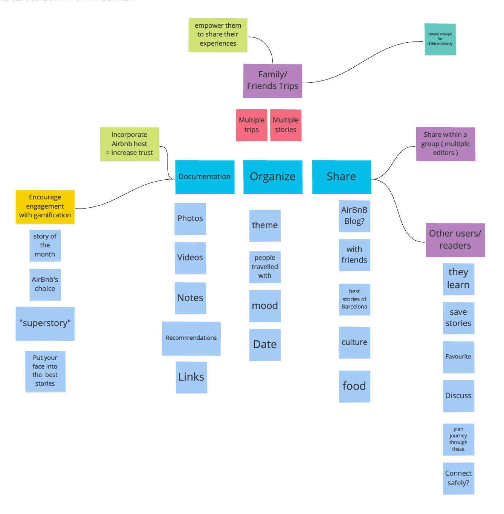
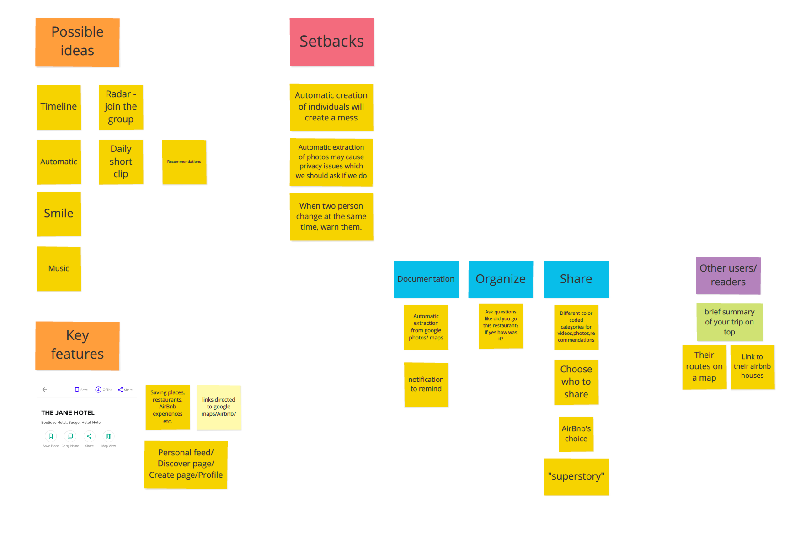
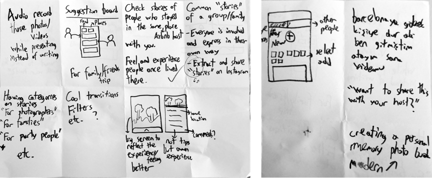
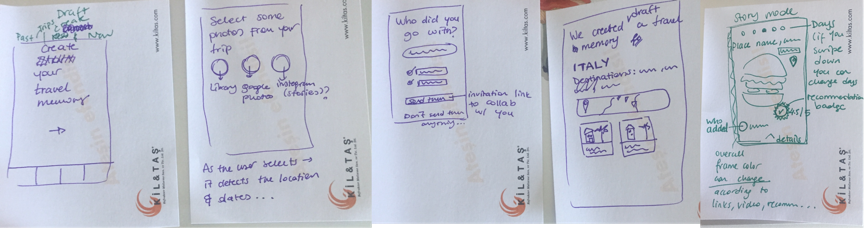
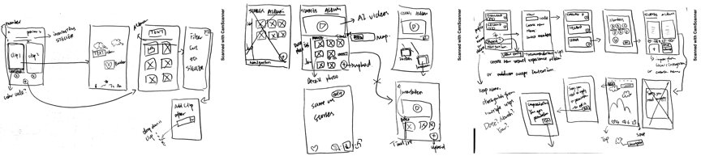
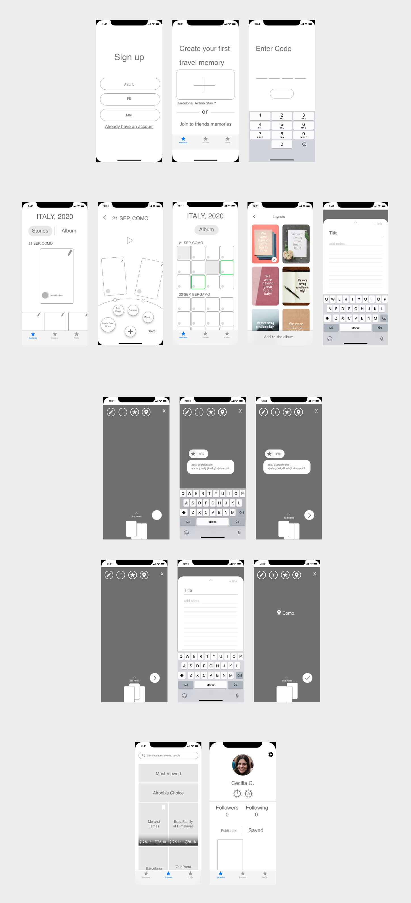
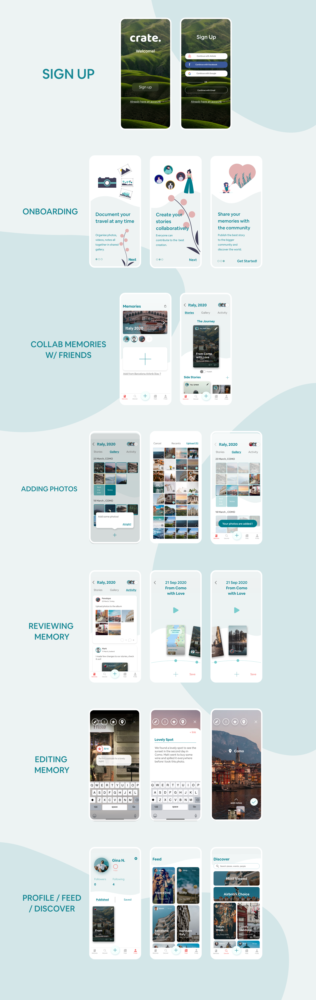

Crate. is an application for every kind of user group aiming to empower families and groups of friends who travel together a collaborative way to document, organize, and share their travel experiences and stays to the larger Airbnb community. It was a 2 day Creative Jam by Adobe XD and Airbnb and we were a group of 3 UX designers. There were other 570 groups from US, Canada and UK with total 1500 and our design was selected as one of the best 20 designs and awarded with Honorable Mention. It was an intense 2 days for us but we were satisfied with the outcome.
Crate. is a mobile app that provides a way to combine photos and/or notes and transform their shared family trips into immersive stories about the culture and destinations they visit. It is a way to keep a photo book of their past experiences and explore others.
Timeline: 2 days
Deliverables: Ideation Map, Wireframes. Final Design
Tools: Adobe XD
Goal: To develop a concept for potential solution based on the brief and personal ideas
Process / Deliverables: Ideation Map
We conducted a quick ideation process to create creative ideas for 3 main aspects that should be included in the application. We diversified these aspects and came up with possible solutions and discussed which ones to keep for our application.
Then we came up with some setbacks to consider for the design step and possible ways to connect some of the functions with Airbnb so the relationship would be more obvious.
 2Goal: To design the optimum layout in the light of the ideation map and the brief
Process / Deliverables: Sketches, Wireframes, Final Design
After determining the basics, we sketched out our ideas separately and afterwards we shared and discussed about them and extracted/ combined the best features.
  We decided on where people combine photos in the story mode and can edit it with badges or special stickers to create a more immersive experience.
Actually before designing the layout of the app, we started with the app map, We wrote down every screens function and where it links so we can determine that if we can finish it in 2 days or do we need to simplify the linear experience because we needed to think logically to achieve a high quality result. Then we converted these screens into wireframes also without the online collaboration function of Adobe XD we wouldn’t do everything so quickly and easily.
In the final day we turned our wireframes into final design with adding the UI aspects. Deciding on colours and fonts didn’t take much time but adding interactions were the most challenging part. During integrating UI to wireframe we iterated some parts and decided on the final look.
I believe we expressed our priority of creating collaborative memories in a clear guidance to our users, and the little details in the memory adding screens are on point and creates nice shortcuts to locations, feelings and tips.
